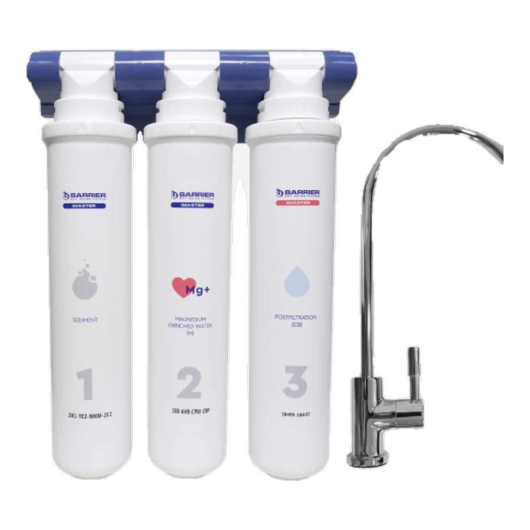
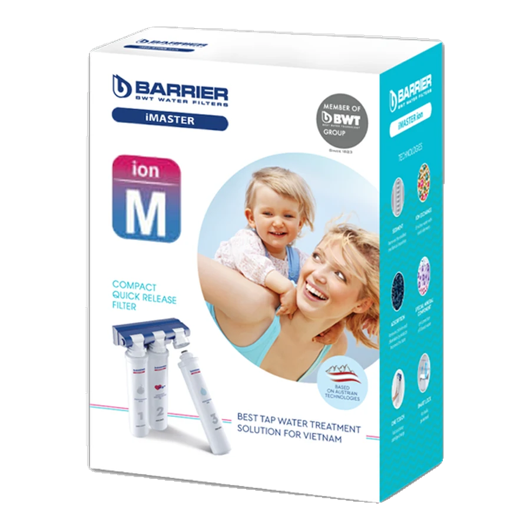
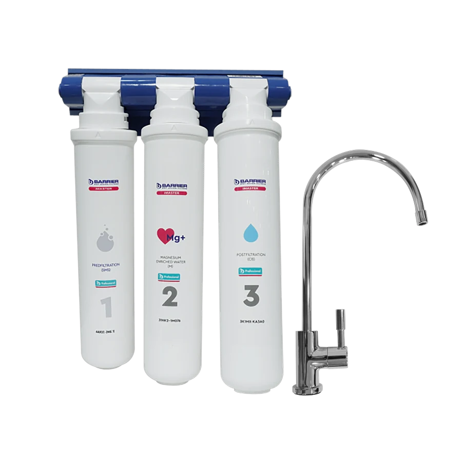
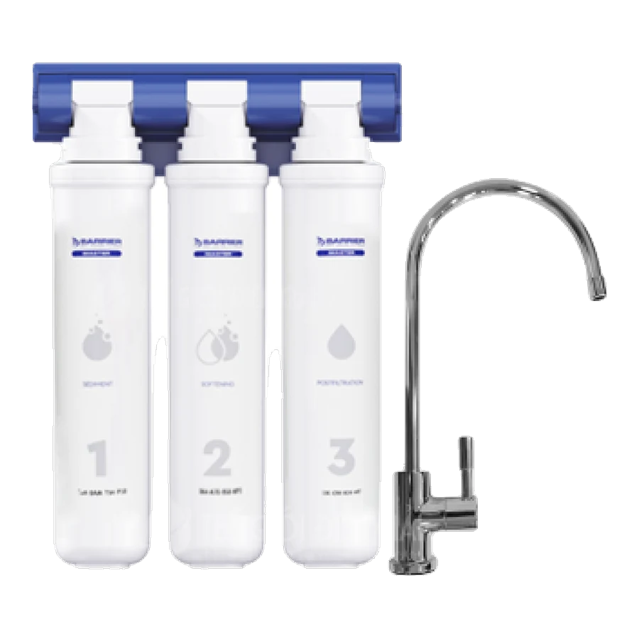
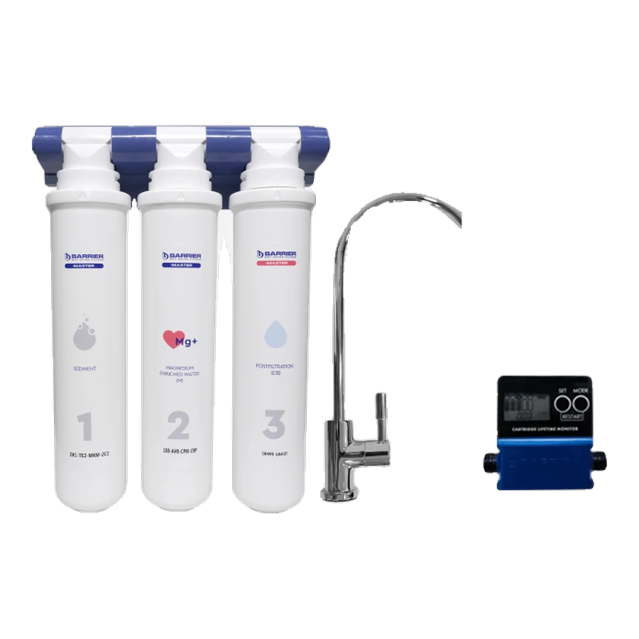
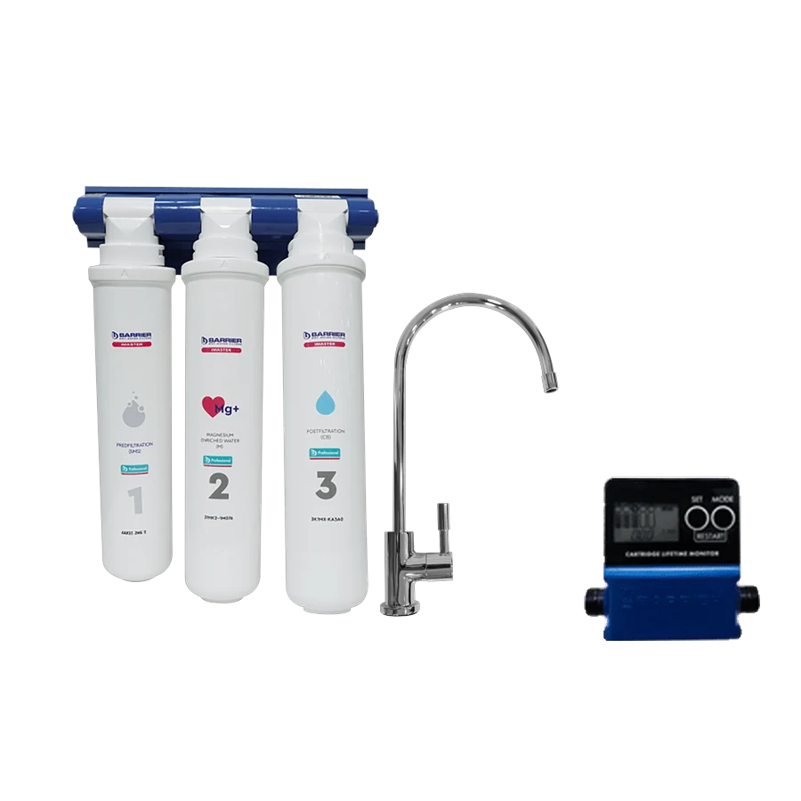
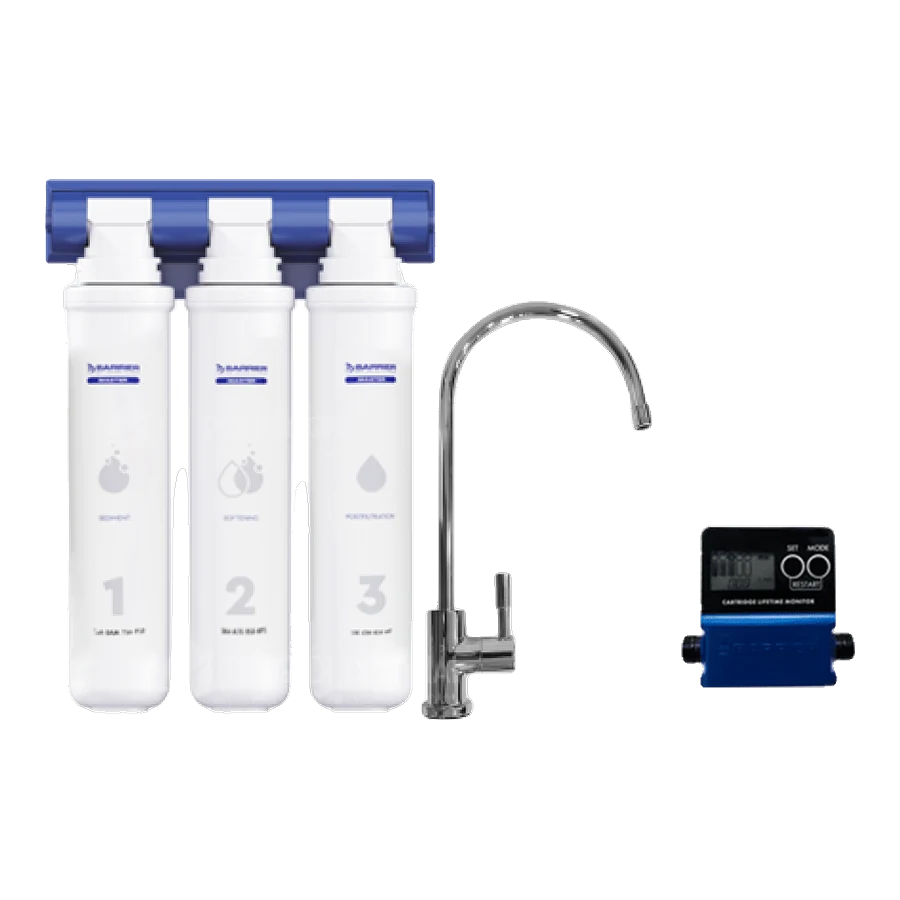
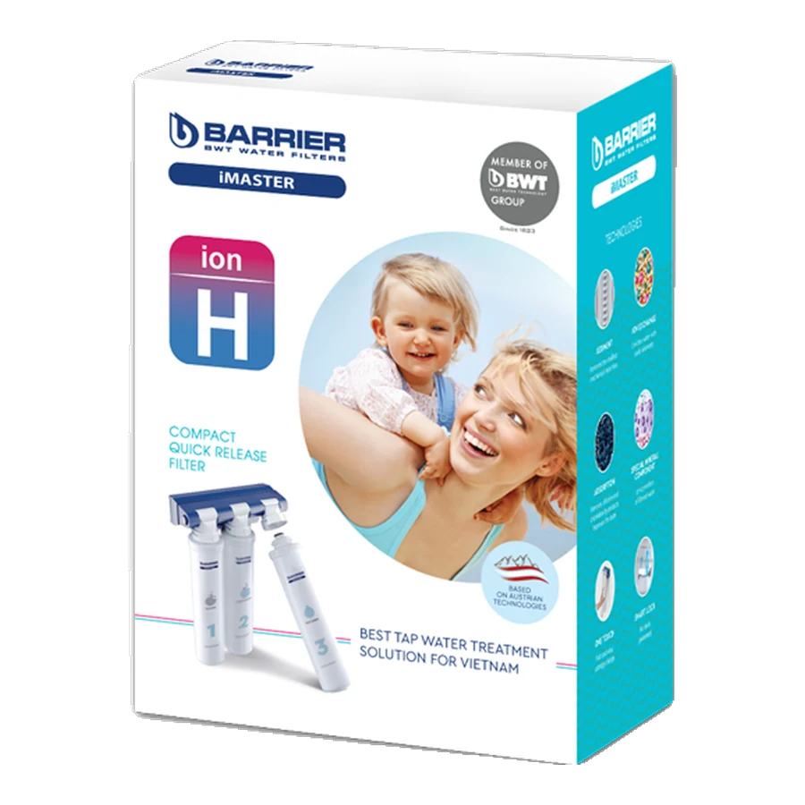

Máy lọc nước

Máy lọc nước BWT Barrier iMaster M
Liên hệGọi hotline để nhận báo giá
Chi tiết

Bộ tiền xử lý · BWT Barrier
Bộ tiền lọc chuyên dụng cho máy điện giải ion kiềm — cân bằng pH và chống bám cặn điện cực.
Phù hợp với: Nhà đang dùng máy lọc nước ion kiềm với nguồn nước máy đô thị, muốn bảo vệ buồng điện phân.
Máy điện giải ion kiềm chỉ hoạt động tốt khi nguồn nước đầu vào đủ sạch và có độ pH phù hợp. Nếu nước đầu vào còn clo dư, cặn canxi hay độ cứng cao, tấm điện cực sẽ đóng cặn rất nhanh — hiệu suất điện phân giảm dần và chi phí sửa chữa buồng điện phân là khoản đắt nhất của một chiếc máy ion kiềm.
Bộ tiền xử lý iMaster ion M giải quyết đúng điểm này: xử lý nguồn nước trước khi vào máy, cân bằng pH, chống bám cặn điện cực, đồng thời vẫn giữ lại nhóm khoáng Ca – Mg – Zn cần thiết cho quá trình điện phân.
| Thương hiệu | BWT Barrier |
|---|---|
| Công nghệ lọc | iON-Exchange ByPass Plus, Nano Plus, Silver Impregnated Carbon, iON-Exchange Fiber |
| Công suất lọc định mức | 10.000 lít (khoảng 12 tháng sử dụng) |
| Điện áp | Không sử dụng điện |
| Nước thải | Không có |
| Kích thước (D x R x C) | 240 x 150 x 330 mm |
| Trọng lượng | 3,334 kg |
| Kiểu lắp đặt | Âm dưới chậu / trong tủ / cạnh bồn |
| Tương thích | Hầu hết máy lọc nước ion kiềm phổ biến trên thị trường |
| Bảo hành | 36 tháng |







Tiếp nhận đăng ký bảo hành, cung cấp cụm lõi thay thế định kỳ và tư vấn xử lý kỹ thuật cho dòng máy lọc nước BWT Barrier iMaster.